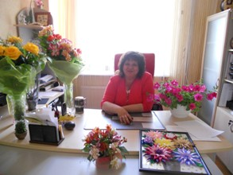
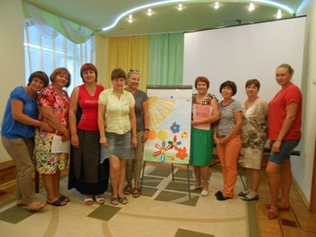
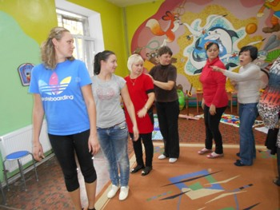

Возглавляет дошкольное учреждение
Галезник Наталья Витальевна,
специалист высшей категории.

Вместе с коллективом единомышленников – энтузиастов она внедряет в жизнь передовые технологии, инновации ориентированные на личностное развитие и воспитание детей.
В МБДОУ «Дружные ребята» работают высококвалифицированные, опытные и творческие педагоги, специалисты, которые помогают раскрыть творческий потенциал каждого ребёнка, исходя от его желаний, интересов и способностей.
Всего педагогов - 21
13 имеют высшее педагогическое образование;У 11-ти педагогический стаж работы составляет более 20 лет;
По результатам аттестации :
5 педагогов имеют высшую квалификационную категорию;4 педагога - первую квалификационную категорию;
Сохраняются многолетние традиции наставничества.
Педагогический коллектив детского сада стабильный, инициативный. В дошкольном учреждении создана атмосфера педагогического оптимизма, ориентации на успех, стремление создать все условия для сохранения и укрепления здоровья воспитанников и сотрудников. Благоприятный , доверительный климат способствует проявлению и реализации индивидуальных способностей каждого педагога, повышению качества воспитательно-образовательной работы.
"Подарите улыбку - получите солнце!"


ОСОБЕННОСТИ ОБРАЗОВАТЕЛЬНОГО ПРОЦЕССА
«Современному образованию – современные подходы» - главное направление деятельности педагогического коллектива дошкольного учреждения.
В МБДОУ созданы благоприятные условия для формирования основ базовой культуры личности, ведется разностороннее развитие ребёнка, направленное на формирование физической, интеллектуальной и социальной компетентности.
Серьёзное внимание уделяется охране и укреплению здоровья дошкольников, совершенствованию их физического здоровья, повышению сопротивляемости организма, формированию жизненно необходимых двигательных умений и навыков.
Ведущим направлением деятельности педагогического коллектива является обеспечение реализации содержания познавательной и речевообразовательных областей ФГОС ДО с использованием развивающих технологий.
Познавательно-речевое развитие дошкольников в условиях введения Федерального государственного образовательного стандарта дошкольного образования - путь и основа для полноценного развития личности каждого ребёнка. Речь, как ведущее средство общения сопровождает все виды детской деятельности. Педагоги, развивая качество речи, учат умению пользоваться ею в игре, на занятиях, при планировании и обсуждении рисунка, наблюдении на прогулке, при обсуждении спектакля и т.д